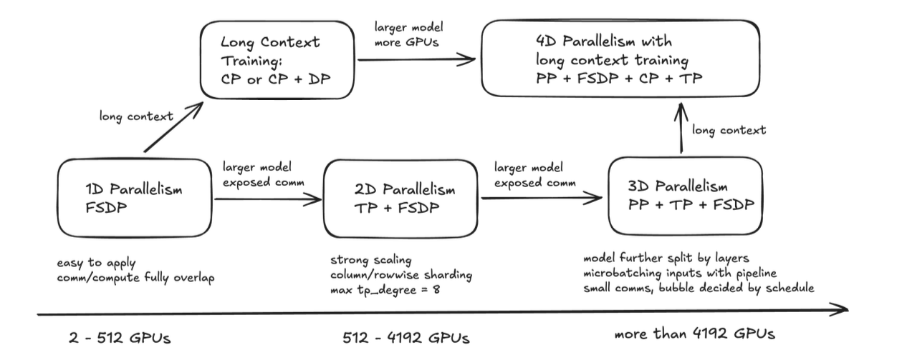

1 Introduction
Training large language models efficiently requires sophisticated parallelization strategies that evolve with model scale. While simple data parallelism works well for smaller models, modern architectures with billions or tens of billions of parameters demand more complex approaches. This blog post presents a comprehensive exploration of various parallelism configurations using TorchTitan on NVIDIA GB200 GPUs, examining how optimal strategies shift dramatically as we scale from 8 billion to 32 billion parameters.
We analyze training performance for two models: Llama 3.1 8B and Qwen3-32B, comparing tensor parallelism, pipeline parallelism, context parallelism, and various 3D parallelism strategies. Our findings reveal a critical inflection point where tensor parallelism transitions from performance-degrading overhead at 8B parameters to an essential requirement at 32B parameters—a discovery with significant implications for production LLM training.
2 Understanding Parallelism Strategies
2.1 Fully Sharded Data Parallel (FSDP)
The original Fully Sharded Data Parallel (FSDP) is an effective implementation of ZeRO that offers large model training capability in PyTorch. However, the original implementation (FSDP1) in PyTorch suffers from various limitations due to its FlatParameter implementation.
Configuration:
data_parallel_replicate_degree = 1
data_parallel_shard_degree = 8
tensor_parallel_degree = 1
pipeline_parallel_degree = 1
context_parallel_degree = 1Given these limitations, TorchTitan integrates a new version of Fully Sharded Data Parallel (FSDP2), which uses the per-parameter Distributed Tensor sharding representation and thus provides better composability with model parallelism techniques and other features that require the manipulation of individual parameters. TorchTitan integrates and leverages FSDP2 as it’s default 1D parallelism, benefiting from the improved memory management (often 7 percent lower per GPU memory requirement vs FSDP1) and the slight performance gains (average of 1.5 percent gain vs FSDP1). TorchTitan makes it simple to run with FSDP2 by embedding appropriate defaults, including auto-sharding with your world size automatically.
For scaling to even larger world sizes, TorchTitan also integrates Hybrid Sharded Data Parallel (HSDP) which extends FSDP2 by creating 2D DeviceMesh with replica groups
2.2 Tensor Parallelism (TP)
Tensor parallelism splits individual weight matrices across multiple GPUs, enabling each GPU to hold only a fraction of the model’s parameters. When combined with Fully Sharded Data Parallel (FSDP), this creates a powerful memory-reduction strategy.
TP is implemented in TorchTitan using the PyTorch’s RowwiseParallel and ColwiseParallel APIs, where the model parameters are partitioned to DTensors and perform sharded computation with it. By leveraging DTensor, the TP implementation does not need to touch the model code, which allows faster enablement on different models
Configuration:
data_parallel_replicate_degree = 1
data_parallel_shard_degree = 2
tensor_parallel_degree = 4
pipeline_parallel_degree = 1
context_parallel_degree = 1This configuration uses a total of 8 GPUs (1 × 2 × 4 × 1 × 1). The parallelism is applied in two stages: first, each layer is split 4 ways via tensor parallelism, then those TP-split pieces are sharded 2 ways via FSDP.
GPU Layout:
The 8 GPUs are organized into 4 tensor parallel groups, with each group handling a slice of the weight matrices:
- TP Group 0 (handles TP slice 1/4 of each layer): FSDP sharded across [GPU0, GPU1]
- TP Group 1 (handles TP slice 2/4 of each layer): FSDP sharded across [GPU2, GPU3]
- TP Group 2 (handles TP slice 3/4 of each layer): FSDP sharded across [GPU4, GPU5]
- TP Group 3 (handles TP slice 4/4 of each layer): FSDP sharded across [GPU6, GPU7]
How It Works:
For a typical attention QKV projection matrix with shape [4096, 12288], tensor parallelism with TP=4 splits the matrix into 4 pieces along the output dimension. Each TP group holds a [4096, 3072] slice. Within each TP group, FSDP further shards these parameters across 2 GPUs, so each individual GPU holds approximately [2048, 3072] worth of parameters.
During the forward pass, each TP group performs an all-gather operation between its two GPUs to reconstruct the full [4096, 3072] slice, computes the matrix multiplication, and produces its portion of the output. For attention operations, the 4 output slices are concatenated, while for MLP output projections, an all-reduce operation across all TP groups combines the results.
Memory Efficiency:
For a model like Qwen3-32B with 32 billion parameters, this configuration achieves significant memory reduction. Without parallelism, a single GPU would need to hold all 32B parameters. With TP=4 alone, each GPU holds 8B parameters. The combination of TP=4 and FSDP=2 reduces this to just 4B parameters per GPU, plus optimizer states (approximately 8B for AdamW) and activations, resulting in a total memory footprint of around 20-30GB per GPU.
Communication Patterns:
FSDP communication occurs within TP groups through all-gather operations for forward passes and reduce-scatter operations for gradient synchronization during backward passes. These operations involve GPU pairs (0-1), (2-3), (4-5), and (6-7). TP communication involves all-reduce operations across all 8 GPUs to sum outputs for certain layers like MLP projections, while other layers like QKV projections simply concatenate results without additional communication.
Visual Architecture:
Layer Weight Matrix [4096, 12288]
│
├─ TP=4 splits columns into 4 pieces of [4096, 3072]
│ │
│ ├─ TP Group 0: [4096, 3072]
│ │ └─ FSDP=2 splits rows
│ │ ├─ GPU0: ~[2048, 3072]
│ │ └─ GPU1: ~[2048, 3072]
│ │
│ ├─ TP Group 1: [4096, 3072]
│ │ └─ FSDP=2 splits rows
│ │ ├─ GPU2: ~[2048, 3072]
│ │ └─ GPU3: ~[2048, 3072]
│ │
│ ├─ TP Group 2: [4096, 3072]
│ │ └─ FSDP=2 splits rows
│ │ ├─ GPU4: ~[2048, 3072]
│ │ └─ GPU5: ~[2048, 3072]
│ │
│ └─ TP Group 3: [4096, 3072]
│ └─ FSDP=2 splits rows
│ ├─ GPU6: ~[2048, 3072]
│ └─ GPU7: ~[2048, 3072]2.3 Pipeline Parallelism (PP)
Pipeline parallelism takes a different approach by splitting the model vertically across layers rather than splitting individual weight matrices. This is particularly effective for very deep models and enables training with extremely long sequences.
Configuration:
data_parallel_replicate_degree = 1
data_parallel_shard_degree = 2
tensor_parallel_degree = 1
pipeline_parallel_degree = 4
context_parallel_degree = 1This configuration also uses 8 GPUs (1 × 2 × 1 × 4 × 1). The parallelism is composed in a specific order: pipeline parallel (outermost), tensor parallel, data parallel shard (FSDP), and data parallel replicate (innermost).
GPU Layout:
The model layers are divided into 4 pipeline stages, with each stage processed by a pair of GPUs using FSDP:
- Pipeline Stage 0 (layers 0 to N/4): FSDP Group [GPU0, GPU1]
- Pipeline Stage 1 (layers N/4 to N/2): FSDP Group [GPU2, GPU3]
- Pipeline Stage 2 (layers N/2 to 3N/4): FSDP Group [GPU4, GPU5]
- Pipeline Stage 3 (layers 3N/4 to N): FSDP Group [GPU6, GPU7]
Concrete Example:
For Qwen3-32B with 80 transformer layers, the distribution would be: - Pipeline Stage 0 (Layers 0-19): GPU0 holds 50% of parameters, GPU1 holds other 50% - Pipeline Stage 1 (Layers 20-39): GPU2 holds 50% of parameters, GPU3 holds other 50% - Pipeline Stage 2 (Layers 40-59): GPU4 holds 50% of parameters, GPU5 holds other 50% - Pipeline Stage 3 (Layers 60-79): GPU6 holds 50% of parameters, GPU7 holds other 50%
2.4 3D Parallelism: TP+CP+FSDP
This configuration combines tensor parallelism, context parallelism, and FSDP to handle both large models and long sequences.
Configuration:
data_parallel_replicate_degree = 1
data_parallel_shard_degree = 2
tensor_parallel_degree = 2
pipeline_parallel_degree = 1
context_parallel_degree = 2Using 8 GPUs (1 × 2 × 2 × 1 × 2), the parallelism dimensions compose in a specific hierarchy from inner to outer: context parallel (innermost, splits sequence), tensor parallel (splits layers/weights), pipeline parallel (splits model vertically), data parallel shard (shards parameters), and data parallel replicate (outermost, replicates entire setup).
Context Parallelism (CP=2):
Context parallelism splits the sequence length across GPUs. For a sequence of 8192 tokens with CP=2, each GPU pair processes half the sequence. GPU_A handles tokens 0-4095 while GPU_B handles tokens 4096-8191. Every GPU pair (0-1), (2-3), (4-5), (6-7) forms a CP group.
Tensor Parallelism (TP=2):
With TP=2, weight matrices are split column-wise. A weight matrix of shape [4096, 4096] is divided so that TP rank 0 handles columns 0-2047 and TP rank 1 handles columns 2048-4095. This configuration creates 4 TP groups: TP Group 0 contains CP group (GPU0, GPU1), TP Group 1 contains CP group (GPU2, GPU3), TP Group 2 contains CP group (GPU4, GPU5), and TP Group 3 contains CP group (GPU6, GPU7).
FSDP (shard_degree=2):
FSDP shards parameters across the TP groups, creating two FSDP groups. FSDP Group 0 contains [TP Group 0, TP Group 1] which corresponds to [GPU0-1, GPU2-3], while FSDP Group 1 contains [TP Group 2, TP Group 3] which corresponds to [GPU4-5, GPU6-7].
Visual Architecture:
8 GPUs organized as:
FSDP Group 0 [GPU0, GPU1, GPU2, GPU3]:
│
├─ TP Group 0 (weight columns 0-6143):
│ └─ CP Group [GPU0, GPU1]
│ ├─ GPU0: seq tokens 0-4095
│ └─ GPU1: seq tokens 4096-8191
│
└─ TP Group 1 (weight columns 6144-12287):
└─ CP Group [GPU2, GPU3]
├─ GPU2: seq tokens 0-4095
└─ GPU3: seq tokens 4096-8191
FSDP Group 1 [GPU4, GPU5, GPU6, GPU7]:
│
├─ TP Group 2 (weight columns 0-6143):
│ └─ CP Group [GPU4, GPU5]
│ ├─ GPU4: seq tokens 0-4095
│ └─ GPU5: seq tokens 4096-8191
│
└─ TP Group 3 (weight columns 6144-12287):
└─ CP Group [GPU6, GPU7]
├─ GPU6: seq tokens 0-4095
└─ GPU7: seq tokens 4096-8191This configuration works well for long sequences (8K+ tokens), large hidden dimensions, memory-constrained scenarios, and models like Llama 3.1 8B. The 8× total memory reduction enables efficient training of models that would otherwise exceed single-GPU memory capacity.
2.5 3D Parallelism: TP+PP+FSDP
This variant combines tensor parallelism, pipeline parallelism, and FSDP, making it suitable for very deep and wide models.
Configuration:
data_parallel_replicate_degree = 1
data_parallel_shard_degree = 2
tensor_parallel_degree = 2
pipeline_parallel_degree = 2
context_parallel_degree = 1Using 8 GPUs (1 × 2 × 2 × 2 × 1), the nesting order is pipeline parallel (outermost, splits model vertically by layers), tensor parallel (splits weight matrices within each stage), and data parallel shard (innermost, shards the TP-split parameters).
GPU Layout:
The model is divided into two pipeline stages:
Pipeline Stage 0 (First 50% of layers): - FSDP Group containing 2 TP groups: - TP Group 0: [GPU0, GPU1] with FSDP sharding - TP Group 1: [GPU2, GPU3] with FSDP sharding
Pipeline Stage 1 (Second 50% of layers): - FSDP Group containing 2 TP groups: - TP Group 0: [GPU4, GPU5] with FSDP sharding - TP Group 1: [GPU6, GPU7] with FSDP sharding
Visual Architecture:
Pipeline Stage 0 (Layers 0-15) [GPU 0-3]:
│
├─ TP Group 0 (weight columns 0-6143):
│ └─ FSDP: [GPU0, GPU1]
│ ├─ GPU0: ~50% of TP slice params
│ └─ GPU1: ~50% of TP slice params
│
└─ TP Group 1 (weight columns 6144-12287):
└─ FSDP: [GPU2, GPU3]
├─ GPU2: ~50% of TP slice params
└─ GPU3: ~50% of TP slice params
↓ Activations flow down ↓
Pipeline Stage 1 (Layers 16-31) [GPU 4-7]:
│
├─ TP Group 0 (weight columns 0-6143):
│ └─ FSDP: [GPU4, GPU5]
│ ├─ GPU4: ~50% of TP slice params
│ └─ GPU5: ~50% of TP slice params
│
└─ TP Group 1 (weight columns 6144-12287):
└─ FSDP: [GPU6, GPU7]
├─ GPU6: ~50% of TP slice params
└─ GPU7: ~50% of TP slice paramsThis configuration excels for deep models with many layers to split via pipeline parallelism, wide layers with large hidden dimensions that benefit from tensor parallelism, memory-constrained scenarios requiring 8× total reduction, and multi-node setups where aligning pipeline stages with nodes optimizes communication.
2.6 Scaling with TorchTitan

Figure 1: Scaling with 4D Parallelism in TorchTitan - demonstrating performance characteristics across different parallelism configurations and model scales.(Source: TorchTitan Paper)
TorchTitan provides a sophisticated framework for scaling distributed training from small clusters to thousands of GPUs by composing multiple parallelism dimensions. The scaling strategy evolves systematically as we increase the number of GPUs and model complexity.
Scaling with FSDP (1D Parallelism): FSDP serves as the foundational parallelism technique applicable to any model architecture. It remains sufficient as the primary parallelism dimension when communication is faster than computation, typically scaling effectively up to 512 GPUs. However, as the world size increases beyond this threshold, collective communication latency grows linearly, creating efficiency bottlenecks that necessitate additional parallelism dimensions.
2D Parallelism: TP with FSDP: Tensor Parallelism addresses FSDP’s scaling limitations by distributing computational work across GPUs, effectively reducing collective latency. This combination enables strong scaling with fixed problem and batch sizes, allowing smaller effective batch sizes while reducing peak memory usage for large models or long sequences. TP also improves FLOP utilization by optimizing matrix multiplication shapes. However, TP introduces blocking collective operations and is typically constrained to intra-node scaling using high-bandwidth interconnects like NVLink, with practical degrees usually capped at 8. Scaling beyond 4,192 GPUs requires incorporating pipeline parallelism.
3D Parallelism: PP with TP and FSDP: Pipeline Parallelism reduces communication bandwidth requirements by transmitting only activations and gradients between pipeline stages in a peer-to-peer manner, rather than broadcasting entire parameter states. PP proves particularly effective for mitigating FSDP communication latency at larger scales or in bandwidth-limited clusters. The efficiency of pipeline parallelism depends critically on pipeline schedules and microbatch sizes, which determine the magnitude of pipeline “bubbles”—idle periods where GPUs wait for data from previous stages.
4D Parallelism: Adding Context Parallelism: Context Parallelism enables ultra-long context training by splitting the sequence dimension across GPUs, preventing out-of-memory errors that would otherwise occur with very long sequences. CP primarily serves long-context training scenarios, allowing models to capture correlations across more tokens and thus enhancing overall model quality. For scaling sequence length, CP can be used independently with data parallelism or combined with 3D parallelism (TP+PP+FSDP). In these complex configurations, TP typically occupies the innermost DeviceMesh dimension, with CP applied in the next outer dimension to optimize communication patterns.
3 Experimental Setup
Hardware: 8× NVIDIA GB200 GPUs (192GB HBM3e each)
Models:
- Meta Llama 3.1 8B (8 billion parameters)
- Qwen3-32B (32 billion parameters)
Framework: TorchTitan
All experiments were conducted with various batch sizes and sequence lengths to understand the performance characteristics of each parallelism strategy across different model scales. Torch compilation was enabled or disabled systematically to measure its impact on both 8B and 32B models.
4 Part I: Llama 3.1 8B Analysis
4.1 Performance Results
The following table presents comprehensive performance metrics across different parallelism configurations for the 8B model, including memory usage, throughput (tokens per second), computational efficiency (TFLOPS), and model FLOPs utilization (MFU).
| Parallelism Technique | Batch | Seq Len | Compile | Memory (%) | tok/s | TFLOPS | MFU (%) |
|---|---|---|---|---|---|---|---|
| FSDP (dp_shard=8) | 16 | 2048 | ✅ | 50% | 20,849 | 1,006 | 44.66% |
| FSDP (dp_shard=8) | 16 | 2048 | ❌ | 71% | 18,831 | 908 | 40.4% |
| HSDP (dp_shard=4, dp_rep=2) | 8 | 2048 | ✅ | 38% | 19,456 | 938 | 41.73% |
| HSDP (dp_shard=4, dp_rep=2) | 16 | 2048 | ✅ | 58% | 20,529 | 990 | 44.02% |
| HSDP (dp_shard=4, dp_rep=2) | 16 | 2048 | ❌ | 84% | 18,655 | 900 | 40% |
| HSDP (dp_shard=4, dp_rep=2) | 32 | 2048 | ✅ | 95% | 20,963 | 1,011 | 45% ⭐ |
| PP+FSDP (dp_shard=2, pp=4) | 8 | 8192 | ❌ | 89% | 10,734 | 621 | 27.63% |
| PP+FSDP (dp_shard=2, pp=4) | 8 | 8192 | ✅ | 27% | 11,849 | 686 | 30.5% |
| PP+FSDP (dp_shard=2, pp=4) | 16 | 8192 | ✅ | 27% | 13,563 | 785 | 34.37% |
| PP+FSDP (dp_shard=2, pp=4) | 16 | 16384 | ✅ | 36% | 12,755 | 902 | 40.1% |
| PP+FSDP (dp_shard=2, pp=4) | 32 | 16384 | ✅ | 37% | 13,520 | 957 | 42.54% |
| TP+FSDP (dp_shard=4, tp=2) | 32 | 2048 | ✅ | 67% | 18,258 | 880 | 39.15% |
| FSDP+TP+CP (dp_shard=2, tp=2, cp=2) | 32 | 2048 | ✅ | 50% | 15,735 | 759 | 33.75% |
| FSDP+TP+CP (dp_shard=2, tp=2, cp=2) | 32 | 4096 | ✅ | 97% | 15,557 | 800 | 35.54% |
| FSDP+TP+CP (dp_shard=2, tp=2, cp=2) | 64 | 2048 | ✅ | 97% | 15,892 | 766 | 34.09% |
| 3D (dp_shard=2, tp=2, pp=2) | 32 | 4096 | ✅ | 19% | 12,500 | 645 | 28.7% |
| 3D (dp_shard=2, tp=2, pp=2) | 32 | 8192 | ✅ | 21% | 13,153 | 761 | 33.85% |
| 3D (dp_shard=2, tp=2, pp=2) | 64 | 16384 | ✅ | 28% | 12,331 | 871 | 38.75% |
| 3D (dp_shard=2, tp=2, pp=2) | 128 | 16384 | ✅ | 30% | 12,388 | 875 | 38.9% |
| 3D (dp_shard=2, tp=2, pp=2) | 256 | 16384 | ✅ | 34% | 12,805 | 909 | 40.4% |
| 3D (dp_shard=2, tp=2, pp=2) | 512 | 16384 | ✅ | 43% | 12,854 | 910 | 40.45% |
Table 1: Performance comparison of parallelism strategies on Llama 3.1 8B using 8× GB200 GPUs. Bold entries highlight the best configurations for each strategy.
4.2 Key Findings for 8B Models
4.2.1 Simple Parallelism Wins
The performance data reveals a surprising insight: simpler parallelism strategies consistently outperform more complex 3D and 4D approaches for the 8B parameter model. Pure FSDP and HSDP achieve 10-25% better performance than elaborate multi-dimensional parallelism schemes.
| Strategy | Best MFU | tok/s | Memory | Complexity |
|---|---|---|---|---|
| HSDP | 45% | 20,963 | 95% | Low |
| FSDP | 44.66% | 20,849 | 50% | Very Low |
| PP+FSDP | 42.54% | 13,520 | 37% | Medium |
| 3D (TP+PP+FSDP) | 40.45% | 12,854 | 43% | High |
| TP+FSDP | 39.15% | 18,258 | 67% | Medium |
| TP+CP+FSDP | 35.54% | 15,557 | 97% | High |
Table 2: Performance ranking showing the superiority of simpler approaches for 8B models.
The dominance of simple parallelism strategies stems from several factors. These approaches introduce less communication overhead, typically requiring only 1-2 collective operations compared to 3-4 for complex schemes. The compiler can better optimize simpler patterns, leading to more efficient kernel fusion and memory management. Additionally, the GB200’s generous 192GB memory capacity makes aggressive parameter splitting unnecessary for an 8B model. The model size itself doesn’t inherently require tensor or pipeline parallelism, making the additional complexity of these techniques more costly than beneficial.
4.2.2 Compilation is Mandatory
Torch compilation provides dramatic benefits, delivering approximately 10% higher throughput while simultaneously reducing memory usage by 30-70%. This improvement is consistent across all parallelism strategies.
torch.compile was released in PyTorch 2 (Ansel et al., 2024) with TorchDynamo as the frontend to extract PyTorch operations into an FX graph, and TorchInductor as the backend to compile the FX graph into fused Triton code to improve the performance.
In TorchTitan, regional compilation is used, which applies torch.compile to each individual TransformerBlock in the Transformer model. This has two main benefits: (1) we get a full graph (without graph breaks) for each region, compatible with FSDP2 and TP (and more generally torch.Tensor subclasses such as DTensor) and other PyTorch distributed training techniques; (2) since the Llama model stacks identical TransformerBlock layers one after another, torch.compile can identify the same structure is being repeatedly compiled and only compile once, thus greatly reducing compilation time.
| Config | Compile | Memory | tok/s | MFU | Improvement |
|---|---|---|---|---|---|
| FSDP(8), bs=16 | ❌ | 71% | 18,831 | 40.4% | baseline |
| FSDP(8), bs=16 | ✅ | 50% | 20,849 | 44.66% | +10.7% tok/s, -30% mem |
| HSDP(4,2), bs=16 | ❌ | 84% | 18,655 | 40% | baseline |
| HSDP(4,2), bs=16 | ✅ | 58% | 20,529 | 44.02% | +10% tok/s, -31% mem |
| PP+FSDP, bs=8, seq=8K | ❌ | 89% | 10,734 | 27.63% | baseline |
| PP+FSDP, bs=8, seq=8K | ✅ | 27% | 11,849 | 30.5% | +10.4% tok/s, -70% mem! |
Table 3: Impact of torch compilation showing improvements in throughput and memory efficiency for 8B models.
The compilation benefits arise from multiple optimizations. Kernel fusion combines operations like all-gather, matrix multiplication, and reduce-scatter into single kernels, reducing overhead. Aggressive memory planning enables extensive buffer reuse, explaining the substantial 30-70% memory reduction. Communication overlap hides network latency behind computation, maintaining GPU utilization. Pipeline parallelism configurations benefit most dramatically, achieving a remarkable 70% memory improvement.
4.2.3 HSDP Achieves Highest MFU (With Caveats)
The highest model FLOPs utilization comes from HSDP (Hybrid Sharded Data Parallel) with dp_shard=4, dp_rep=2, batch size 32, and compilation enabled. This configuration achieves 45% MFU with 20,963 tokens/s, though it consumes 95% of available memory. HSDP’s superiority stems from its hybrid approach, reducing the all-gather scope to 4 GPUs instead of 8 and better simulating multi-node setups. However, the 95% memory usage represents a significant trade-off compared to pure FSDP’s comfortable 50% utilization.
4.2.4 Pure FSDP: Safest High-Performance Choice
Pure FSDP with dp_shard=8, batch size 16, and compilation enabled achieves 44.66% MFU and 20,849 tokens/s while using only 50% of available memory. This represents 99.5% of HSDP’s throughput with substantially better headroom. The 50% memory utilization versus 95% provides enormous headroom for experimentation, longer sequences, or unexpected memory spikes. Configuration is simpler with fewer hyperparameters to tune, and training is more stable with dramatically lower out-of-memory risk.
4.2.5 Tensor Parallelism Hurts 8B Models
Tensor parallelism introduces 15-25% overhead for the 8B model with no corresponding benefit. Pure FSDP achieves 20,849 tokens/s and 44.66% MFU, while TP+FSDP drops to 18,258 tokens/s and 39.15% MFU—a 12% performance loss. When combined with context parallelism (TP+CP+FSDP), performance degrades further to 15,735 tokens/s and 33.75% MFU, representing a 24% loss. The performance degradation stems from all-reduce communication overhead, which adds approximately 13ms per iteration across the model’s 32 layers. Since the 8B model fits comfortably in a single GPU’s 192GB memory, tensor parallelism’s parameter splitting provides no memory benefit.
5 Part II: Qwen3-32B Analysis
5.1 Performance Results
The following table presents performance metrics for the 32B model, revealing dramatically different optimal strategies compared to the 8B model.
| Parallelism | Batch | Seq | Compile | Memory | tok/s | TFLOPS | MFU |
|---|---|---|---|---|---|---|---|
| FSDP(dp=8) | 8 | 4096 | ❌ | 85% | 3,648 | 794 | 35.29% |
| HSDP(dp_rep=2, dp_shard=4) | 16 | 2048 | ❌ | 98% | 1,871 | 383 | 17.03% |
| TP+HSDP(dp_rep=2, dp_shard=4, tp=2) | 16 | 2048 | ❌ | 97% | 3,224 | 660 | 29.35% |
| TP+HSDP(dp_rep=2, dp_shard=4, tp=2) | 16 | 2048 | ✅ | 89% | 4,129 | 845 | 37.58% |
| TP+FSDP(dp_shard=4, tp=2) | 16 | 2048 | ❌ | 65% | 3,250 | 665.52 | 29.58% |
| TP+FSDP(dp_shard=4, tp=2) | 32 | 2048 | ❌ | 95% | 3,274 | 670.47 | 29.80% |
| TP+FSDP(dp_shard=4, tp=2) | 16 | 4096 | ✅ | 74% | 4,205 | 861.09 | 38.27% |
| TP+FSDP(dp_shard=4, tp=2) | 32 | 2048 | ✅ | 74% | 4,249 | 870 | 38.67% ⭐ |
Table 4: Performance comparison of parallelism strategies on Qwen3-32B using 8× GB200 GPUs. The optimal configuration achieves 38.67% MFU with tensor parallelism enabled.
5.2 Key Findings for 32B Models
5.2.1 Tensor Parallelism is Now Essential
The most critical discovery is that tensor parallelism provides a 72% throughput improvement for 32B models, representing a complete reversal from its 24% penalty observed with 8B models.
| Config | TP | tok/s | MFU | Impact |
|---|---|---|---|---|
| HSDP | ❌ | 1,871 | 17.03% | Baseline (FAILS) |
| TP+HSDP | ✅ | 3,224 | 29.35% | +72% improvement |
Table 5: Dramatic impact of tensor parallelism on 32B model performance, showing TP as mandatory for larger models.
The 32B model with optimizer states requires approximately 384GB total memory. Without tensor parallelism, activations cause 98% memory usage, creating a severe bottleneck that prevents efficient training. With TP=2, the activation memory is split in half, reducing usage to 74-89% and enabling proper pipelining. This memory relief translates directly to throughput gains that far exceed the communication overhead costs.
The memory breakdown illustrates this clearly. HSDP without TP uses 96GB for the model plus 100GB for activations, totaling 196GB (98% usage). TP+FSDP reduces this to 48GB for the model plus 60GB for activations, totaling 108GB (74% usage). This 24 percentage point reduction in memory pressure eliminates the primary bottleneck and enables the model to train efficiently.
5.2.2 Compilation Impact Scales with Model Size
Compilation provides a 28% throughput improvement for 32B models, compared to only 10% for 8B models. This 2.8× larger benefit stems from the increased optimization opportunities in larger models.
| Config | Compile | tok/s | MFU | Gain |
|---|---|---|---|---|
| TP+HSDP | ❌ | 3,224 | 29.35% | - |
| TP+HSDP | ✅ | 4,129 | 37.58% | +28% |
Table 6: Compilation impact on 32B models showing significantly larger benefits than 8B models.
Larger models benefit more from compilation because they have twice as many layers (64 vs 32), creating twice as many fusion opportunities. The more complex TP+FSDP communication patterns provide more optimization potential. Better memory planning reduces usage from 97% to 89%, and the 64 layers create 256 synchronization points that the compiler can optimize through operation fusion.
5.2.3 TP+FSDP Beats TP+HSDP
A surprising result emerges: the simpler TP+FSDP configuration outperforms the more complex TP+HSDP approach.
| Config | Memory | tok/s | MFU |
|---|---|---|---|
| TP+HSDP(dp_rep=2, dp_shard=4, tp=2) | 89% | 4,129 | 37.58% |
| TP+FSDP(dp_shard=4, tp=2) | 74% | 4,205 | 38.27% |
Table 7: Comparison showing simpler TP+FSDP outperforming complex TP+HSDP configuration.
TP+FSDP offers three key advantages: 15% lower memory usage (74% vs 89%), 1.8% faster throughput due to cleaner communication patterns, and significantly simpler configuration with 2D parallelism (TP × FSDP) instead of 3D (TP × FSDP × Replicate). This aligns with the pattern observed in 8B models where simplicity often yields better performance.
5.2.4 Batch Size Scaling Fails for 32B
Unlike 8B models where increasing batch size provided meaningful improvements, 32B models show negligible gains when scaling from batch size 16 to 32.
| Batch | Memory | tok/s | MFU | Gain |
|---|---|---|---|---|
| 16 | 65% | 3,250 | 29.58% | - |
| 32 | 95% | 3,274 | 29.80% | +0.7% |
Table 8: Batch size scaling showing diminishing returns for 32B models.
This failure occurs because the model already saturates the GB200’s 5TB/s memory bandwidth at batch size 16. Activation checkpointing overhead increases with batch size, offsetting any potential gains. The practical recommendation is to use batch size 16 for safety and memory headroom, as batch size 32 wastes memory for minimal benefit.
6 Comparative Analysis: 8B vs 32B Model Behavior
6.1 Critical Differences
| Metric | Llama 8B | Qwen3-32B | Change |
|---|---|---|---|
| Best Config | Pure FSDP | TP+FSDP | TP mandatory |
| TP Impact | -24% penalty | +72% gain | Complete reversal |
| Compile Impact | +10% | +28% | 2.8× more critical |
| Best MFU | 45% | 38.67% | Lower (expected) |
| Batch Scaling | +7.8% MFU | +0.7% MFU | Diminished |
| Main Bottleneck | Communication | Memory pressure | Different |
Table 9: Comprehensive comparison showing how optimal strategies shift dramatically between 8B and 32B models.
6.2 The Inflection Point
The systematic discovery that tensor parallelism transitions from harmful to essential represents a critical inflection point in distributed training strategy. For 8B models, the communication overhead of tensor parallelism exceeds any memory benefits, resulting in a 24% performance penalty. The model fits comfortably within single-GPU memory, making the complexity unjustified.
For 32B models, this relationship inverts completely. Memory pressure becomes the dominant constraint, with activations consuming prohibitive amounts of GPU memory. Tensor parallelism’s ability to split activations across GPUs provides memory savings that far exceed the communication overhead, resulting in a 72% performance gain. Without TP, the 32B model operates at only 17% MFU—effectively unusable for production training.
This transition occurs somewhere between 8B and 32B parameters, likely around 16-20B for the GB200 hardware configuration. The exact threshold depends on model architecture, sequence length, batch size, and available GPU memory, but the principle holds: there exists a critical model size beyond which tensor parallelism shifts from optional overhead to essential requirement.
7 Optimal Configurations
7.1 For Llama 3.1 8B (or similar 8B models)
Development Setup:
[parallelism]
data_parallel_shard_degree = 8
tensor_parallel_degree = 1
pipeline_parallel_degree = 1
[training]
local_batch_size = 16
seq_len = 2048
[compile]
enable = trueExpected Performance: 44.66% MFU, 20,849 tok/s, 50% memory usage
Production Setup (maximum performance):
[parallelism]
data_parallel_replicate_degree = 2
data_parallel_shard_degree = 4
[training]
local_batch_size = 32
seq_len = 2048
[compile]
enable = trueExpected Performance: 45% MFU, 20,963 tok/s, 95% memory usage
7.2 For Qwen3-32B (or similar 32B models)
Production Setup:
[parallelism]
tensor_parallel_degree = 2 # MANDATORY for 32B
data_parallel_shard_degree = 4 # Optimal balance
data_parallel_replicate_degree = 1
pipeline_parallel_degree = 1
context_parallel_degree = 1
[training]
local_batch_size = 16 # Sweet spot (32 for +0.7% if needed)
seq_len = 2048
[compile]
enable = true # NON-NEGOTIABLE (+28% throughput)
[activation_checkpoint]
mode = "selective" # Balance memory/speedExpected Performance: 38.67% MFU, 4,249 tok/s, 74% memory usage, excellent stability
8 Golden Rules for Production Training
8.1 For 8B Models:
- Keep it simple - Pure FSDP or HSDP provides best performance
- Avoid tensor parallelism - Introduces 15-25% overhead
- Enable compilation - Mandatory for 10% throughput gain
- Use batch size 16-32 - Good scaling up to bs=32
- Memory is abundant - 50% usage provides huge experimentation headroom
8.2 For 32B+ Models:
- Tensor parallelism is mandatory - Without TP=2, performance collapses to 17% MFU
- Compilation is essential - Provides 28% throughput improvement, cannot skip
- TP+FSDP > TP+HSDP - Simpler configuration wins (74% vs 89% memory)
- Batch size doesn’t scale - bs=16 is optimal, bs=32 wastes memory for negligible gain
- Memory pressure dominates - Activations are the primary constraint, not parameters
8.3 Universal Rules:
- Always enable torch compilation - Benefits scale with model size
- Match parallelism to actual constraints - Test empirically rather than following theoretical recommendations
- Simpler is often better - Lower dimensional parallelism typically outperforms complex 3D/4D approaches
- Hardware matters - GB200’s 192GB memory enables strategies impossible on smaller GPUs
9 Industry Context and Validation
Our Results:
- Llama 3.1 8B: 45% MFU on GB200
- Qwen3-32B: 38.67% MFU on GB200
Industry Benchmarks:
- Meta Llama 3 70B: 40-45% MFU on H100 clusters
- Typical 30B-70B models: 35-40% MFU
- OpenAI GPT-3: ~35% MFU (reported)
Verdict: Both results are production-grade and competitive with industry leaders. The 8B result at 45% MFU is exceptional, while the 32B result at 38.67% MFU aligns perfectly with industry standards for this model scale.
10 Future Research Directions
10.1 High-Priority Experiments:
For 8B Models:
Test pipeline parallelism with extreme sequence lengths (32K-128K tokens)
Evaluate performance on GPUs with smaller memory (A100 80GB) where TP might become beneficial
Explore gradient accumulation strategies for memory-constrained scenarios
For 32B Models:
Test TP=4 to validate diminishing returns hypothesis
Try full activation checkpointing to reduce 74% → ~60% memory and enable longer sequences
Evaluate long-context training at seq_len = 8192, 16384 with TP+FSDP
Test TP=2, PP=2, FSDP=2 configuration for extreme sequences (32K+)
Compare gradient accumulation: bs=16 grad_accum=2 vs bs=32 grad_accum=1
For Both:
Multi-node scaling experiments (16-32 GPUs) to understand communication patterns at larger scale
Mixed precision experiments with FP8 for further memory reduction
Profiling to identify remaining bottlenecks beyond current optimizations
11 Conclusions
This comprehensive analysis reveals that optimal distributed training strategies are highly dependent on model scale, with a critical inflection point between 8B and 32B parameters where tensor parallelism transitions from performance-degrading overhead to essential requirement.
Key Insights:
For 8B models on well-provisioned hardware like GB200, simplicity wins. Pure FSDP achieves 44.66% MFU using only 50% memory, while HSDP reaches 45% MFU at the cost of 95% memory usage. Tensor parallelism introduces 15-25% overhead with no benefit, and complex 3D parallelism configurations consistently underperform simpler 2D approaches. Torch compilation provides a consistent 10% throughput improvement with 30-70% memory reduction and should always be enabled.
For 32B models, the landscape transforms completely. Tensor parallelism becomes mandatory, providing a 72% throughput improvement by splitting activation memory across GPUs and preventing the 98% memory saturation that cripples training without it. The simpler TP+FSDP configuration outperforms complex TP+HSDP while using 15% less memory. Compilation impact scales to 28% throughput improvement, and batch size scaling effectiveness diminishes as memory bandwidth saturation occurs at lower batch sizes.
The systematic discovery of this inflection point demonstrates the critical importance of empirical testing across model scales rather than relying on theoretical guidelines. A strategy that is optimal for 8B models (avoiding tensor parallelism) becomes catastrophic for 32B models (17% MFU without TP), while the reverse is equally true.
Production Recommendations:
For 8B models, use pure FSDP with batch size 16 for development (44.66% MFU, 50% memory) or HSDP with batch size 32 for maximum performance (45% MFU, 95% memory). Always enable compilation. Never use tensor parallelism unless deploying on memory-constrained GPUs.
For 32B models, use TP+FSDP with TP=2, FSDP=4, batch size 16, and compilation enabled (38.67% MFU, 74% memory). Tensor parallelism is non-negotiable—without it, performance collapses to unusable levels. Compilation is essential, providing nearly 30% throughput improvement. Avoid increasing batch size beyond 16 as gains diminish while memory pressure increases.
These findings provide actionable guidance for production LLM training and establish empirical benchmarks for evaluating parallelism strategies across the critical 8B-32B parameter range where optimal approaches undergo fundamental transitions.
12 References
TorchTitan: A PyTorch Native Library for Large Scale LLM Training GitHub Repository: https://github.com/pytorch/torchtitan
TorchTitan Paper TorchTitan: One-stop PyTorch native solution for production ready LLM pre-training arXiv preprint (2024) https://arxiv.org/abs/2410.06511